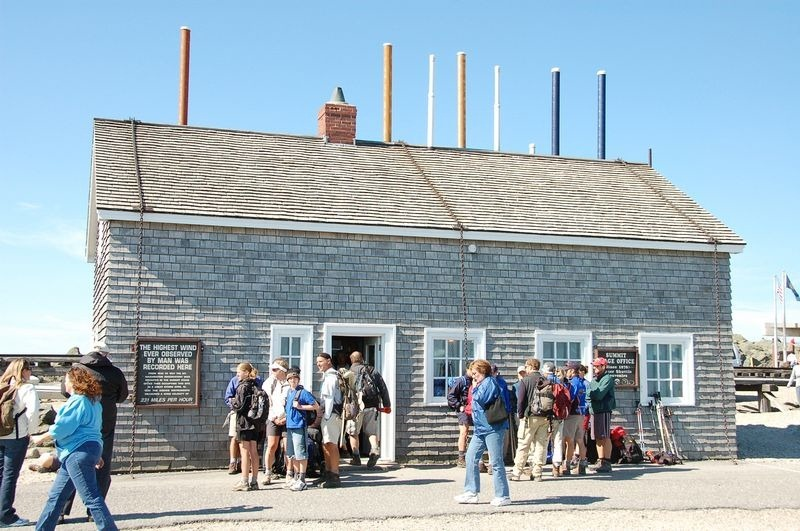
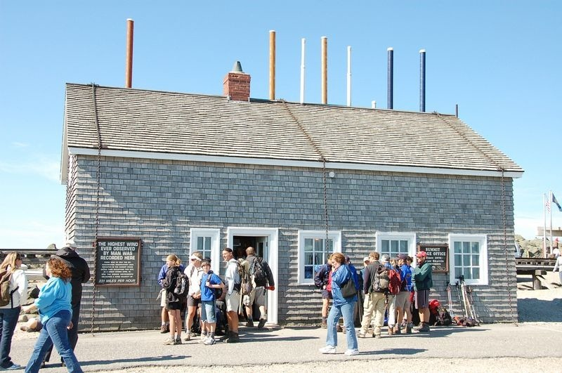
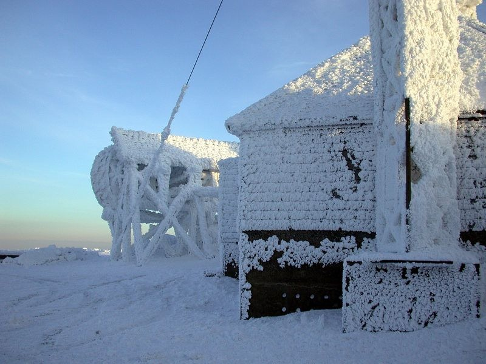
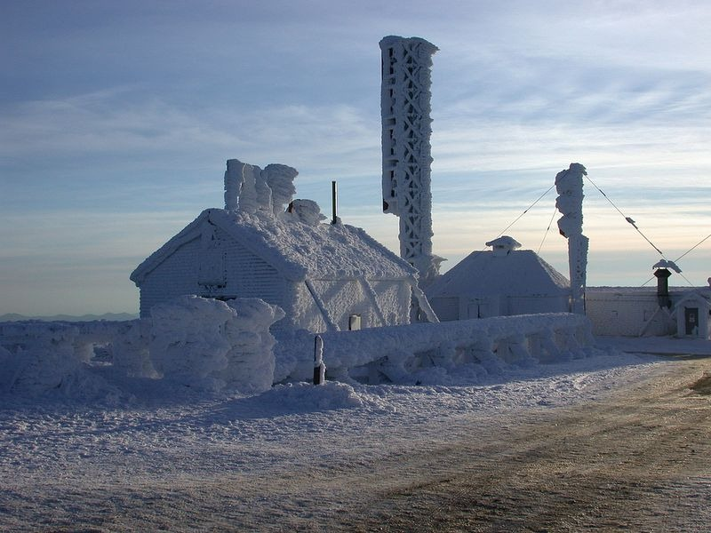
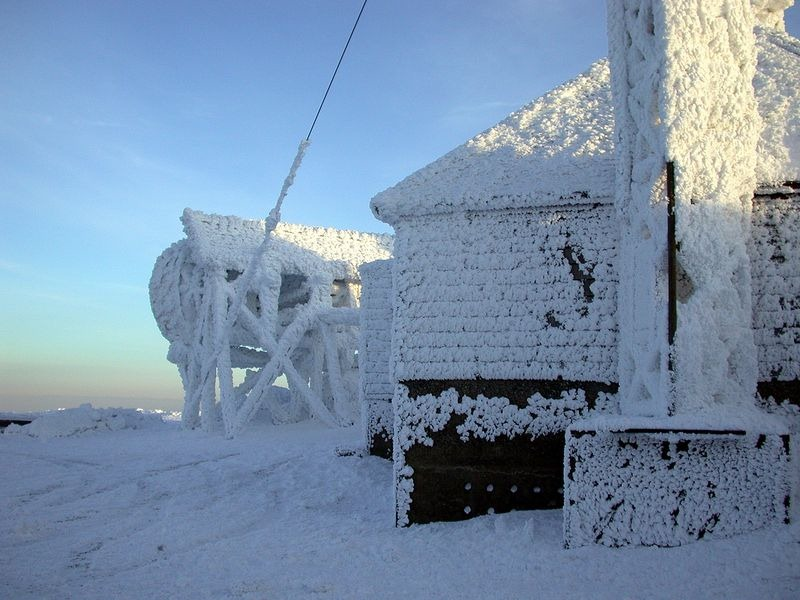
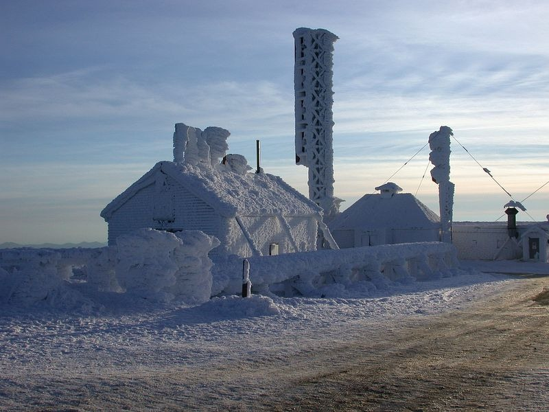

Mount Washington is located in the temperate climate zone but has Arctic-like conditions. Extreme cold, year-round snowfall, dense fog, heavy icing, and exceptional winds are some of Mount Washington's prominent features. The peak isn’t terribly high either — just 6,288 feet — yet it endures some of the planet’s most extreme weather comparable to those experienced on top of Mount Everest or on the South Pole.
The lowest temperature ever recorded at Mount Washington's summit is −46.0 °C. Only the South Pole is colder. The highest wind speed recorded here was 231 miles per hour (372 km/h) which remained the fastest wind speed ever recorded anywhere on earth, for most of the 20th century, besting even the most fierce hurricanes. The peak is blasted by hurricane-force wind on an average of 110 days a year which further lowers the wind chill value. On January 16, 2004, the summit registered a temperature of −42.0 °C and sustained winds of 87.5 mph (140.8 km/h), resulting in a wind chill value of −74.77 °C.
Mount Washington’s extreme weather is due to its geographic location. The peak stands on the path of several storms, mainly those from the Atlantic to the south, the Gulf region and Pacific Northwest. The vertical rise of the Presidential Range, combined with its north-south orientation, makes it a significant barrier to westerly winds. In the winter months, due to the relative temperature differences between the Northeast and the Atlantic Ocean, a low-pressure system develops along the coastline which generates ferocious gusts of wind.
For nearly sixty-two years, Mount Washington held the world record for the fastest wind gust ever recorded on the surface of the Earth. On April 12, 1934, researchers at the Mount Washington Observatory recorded wind speeds of 231 miles per hour. The record was toppled in 1996 when an unmanned instrument station in Barrow Island, Australia recorded a new record of 253 miles per hour during Typhoon Olivia. The primary building of Mount Washington Observatory built on the summit in 1932, as well as many structures of the observatory, are actually chained to the ground to prevent these structures from being blown away.
Mount Washington also receives very high levels of precipitation. Snowfall occurs almost throughout the year averaging 280 inches a year. In February 1969, a record 49.3 inches of snow fell during a single 24-hour period. These erratic weather condition prompted Charles Brooks, the man behind the creation of the Mount Washington Observatory, to call Mount Washington as "Home of the World's Worst Weather" — a slogan the observatory makes prominent use of.
The peak and the observatory are a popular tourist spot as well. The mountain is part of a popular hiking area, with the Appalachian Trail crossing the summit, that brings in many adventurists to the area. The high winds has also made the region a popular site for glider flying. For those who aren’t into hiking, there is a cog railway that provides tourists with a train journey to the summit of Mount Washington.

 

 


